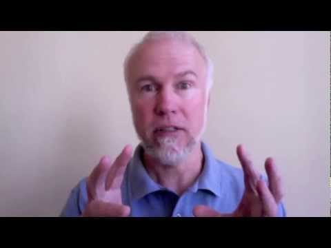

3. Book Three: Method#
3.1. Quick Start Guide#
What would I say if I had just five minutes to give comprehensive instructions for awakening?
You are unenlightened to the extent that you are embedded in your experience. You think that your experience is you. You must dis-embed. Do this by taking each aspect of experience as object (looking at it and recognizing it) in a systematic way. Then, surrender entirely.
Do these practices, exactly as written:
First Gear:
Objectify body sensations. If you can name them, you aren’t embedded there. Notice sensations and note to yourself: “Pressure, tightness, tension, release, coolness, warmth, softness, hardness, tingling, itching, burning, stinging, pulsing, throbbing, seeing, tasting, smelling, hearing.” If I am looking at something it is not “I”.
Objectify feeling-tone. Are sensations pleasant, unpleasant, or neutral? Every time you note pleasant, unpleasant, or neutral, you are dis-embedding from experience.
Objectify mind states. Call them out as they occur. “Investigation, curiosity, happiness, anxiety, amusement, sadness, joy, anger, frustration, annoyance, irritation, aversion, desire, disgust, fear, worry, calm, embarrassment, shame, self-pity, compassion, love, contentment, dullness, sleepiness, bliss, exhilaration, triumph, self-loathing.” Name them and be free. These mind states are not “you;” if there is a “you” it must the one who is looking, rather than what is being looked at. Below, we will challenge the notion that there is any “you” at all.
Objectify thoughts. Categorize them: “Planning thought, anticipating thought, worrying thought, imaging thought, remembering thought, rehearsing thought, scenario spinning thought, fantasy thought, self-recrimination thought.” Come up with your own vocabulary and see your thoughts as though they belonged to someone else. The content of your thoughts is not relevant except to the extent that it helps you to label and therefore objectify them.
Second Gear:
Objectify the apparent subject. Who am “I”? Turn the light of attention back on itself. Who knows about this experience? To whom is this happening? Spoiler: you will not find a self to whom this is happening. Keep looking until this becomes second nature.
Third Gear:
1. Surrender entirely. Let it be. Good. Now go beyond even surrender, to the simple acknowledgement that this moment is as it is, with or without your approval. This does not mean that you must be passive. Surrender also to activity. You are not in charge. You are the little kid in the back seat with the plastic steering wheel. Relax and enjoy the ride.
3.2. Introduction to the Method#
The method described here is a synthesis of the lessons of my practice and teaching over the past thirty years. My aim is to present a systematic, reproducible method for the development of contemplative fitness. The method works; hundreds of students have used this program to develop high levels of contemplative fitness. But it is not the only effective method, nor is it necessarily the best for every individual. Think of it as similar to a gym routine from a personal fitness trainer; you can expect it to perform as advertised if you do the work, but it is not the only way to work out.
While we are developing contemplative excellence, let us also develop a bit of emotional maturity; I would like to take the moralism out of meditation. You would never think that your personal fitness trainer is a better person than you are simply because he can bench press heavier weights than you; he just works out more and consequently has a skill set and a fitness level that you do not yet have. This does not make him a saint. Contemplative development is morally neutral in the same way; being an expert meditator or being “awakened” does not make you a better person. Rather, a high level of contemplative fitness means that you have pumped enough mental iron to develop a set of skills and competencies that most people do not have. If you want to be a good person, you must behave like one; simply meditating won’t do it for you.
There are many possible variations on contemplative fitness. This method is one that matches my values and has consistently proven successful in helping my students develop elite contemplative skills. It trains a variety of skills and understandings that are valuable on their own, and can serve as a starting point for further exploration and specialization depending on individual interests. The course draws on techniques and concepts I have found useful from Theravada Buddhism as well as various traditions including Zen, Tibetan Buddhism, Advaita Vedanta, Neo-Advaita and Christian mysticism. You will also find a healthy dose of my unique contributions; when possible, I will make an effort to point out which is which in order to avoid confusion.
Depending on his or her interests, the student may or may not decide to follow the method all the way through. I recommend stream entry, as described in the chapter by that name, as a wonderful goal for any meditator. For a more casual meditator, simply reading the following chapter on the three speed transmission and the techniques compendium in the appendix may be enough. For the student interested in mapping the experiences of the contemplative path and gaining facility with altered states, the later chapters of the method will be of interest. For someone who seeks elite levels of contemplative fitness, aka spiritual enlightenment, I recommend that you practice the program in its entirety. The surest way to arrive at contemplative excellence is to build a robust practice by triangulating from many different directions.
This is a course for a lifetime of contemplative development. When someone asks me how long it takes to reach stream entry or some other mile-marker of progress, I point out that a similarly unanswerable question would be “how long does it take to be able to do twenty pushups?” For some people, it is trivial; they can already do twenty pushups. For others, doing twenty pushups is a big deal, and some people may never be able to do it in their lifetime. Similarly, with contemplative fitness there is a great deal of individual variation in the time it takes to make progress, depending on what you’re bringing to the table and how much time and energy you are willing to invest. Based on my experience working with students, we can model a bell curve for how long it takes to get stream entry, the first goal I recommend to my students and to the readers of this book. Most people who take on the project are likely to get stream entry within a year or two. On the tail ends of the curve, I know people who have been working seriously towards stream entry for several years and haven’t yet gotten it, and I also know people who managed it within a month or two of getting serious about their meditation practice. Having attained stream entry, you are likely to find that there is more to do and that you are more interested in your meditation practice than ever. Ultimately, there is no end to contemplative development. Like evolution, it adapts forever, always changing and moving into new spaces, never resting or growing stale. Plan on practicing for the rest of your life and falling more deeply in love with your practice with each passing year.
3.3. Course Objectives#
After completing this course, you will know:
The difference between pure concentration and vipassana meditation.
Basic theory of the Three Speed Transmission
Three basic skills of
concentration,
perceptual acuity, and
perceptual resolution.
Basic developmental theory of contemplative fitness.
Basic theory of 20 strata of mind.
Multiple meditation techniques useful in formal meditation and in daily life, including vipassana, concentration (samatha), self-inquiry, and choiceless awareness.
After completing this course, you will be able to:
Deconstruct the objects of attention using the vipassana technique.
Recognize, navigate, and objectify a variety of mind states.
Access 20 strata of mind, including the Insight Knowledges from the Progress of Insight and thirteen jhanas (altered states of consciousness brought about by meditative absorption).
Practice meditation interactively with other people.
See your experience as process, at least some of the time.
Trajectory of the course
Balance concentration and investigation to progress through the Progress of Insight and attain stream entry.
You’ve learned to navigate and objectify a wide variety of mind states and experiences, in formal practice and in daily life.
Use concentration to develop facility with jhanas.
You’ve learned to access a variety of blissful absorption states that are fun, interesting, and conducive to tranquility.
Use 6th jhana to scaffold 2nd gear (self-enquiry) and dwell as the Witness.
You’ve become less distractible by learning to sustain attention on one object instead of many.
You’ve learned another way of moving practice into daily life.
You’ve learned another valuable perspective: to look at your own experience from a dispassionate point of view.
See through the Witness by investigating it or letting it run its course to scaffold 3rd gear
You’ve learned to see your life as process.
You’ve leveled the playing field and learned that there is no ultimate state; there are many lenses or perspectives of equal status.
Three Basic Skills
Concentration.
Increased perceptual resolution.
Increased perceptual acuity.
To understand the difference between perceptual acuity and perceptual resolution, imagine watching a movie. Higher acuity relates to clarity and sharpness. With high acuity, can see the images more clearly, see the colors as rich and saturated, and see what the figures in the movie are doing in great detail.
Perceptual resolution allows you to drill down to see pixels rather than a solid shape (this is spatial resolution), and also allows you to see that, in reality, a movie is a series of still frames projected in quick succession, creating the illusion of movement (temporal resolution).
Much of the training we will do is designed to strengthen the three basic skills of concentration, perceptual acuity, and perceptual resolution. These three skills build the foundation for the entire program. More complex skills arise naturally when these simple building blocks are well developed.
3.4. Unit 1: Get Stream Entry#
3.4.1. Introduction to Stream Entry#
We begin our training by working towards stream entry, a classical attainment from Buddhism. There are many ways of interpreting stream entry, and some traditions don’t discuss it at all. My interpretation is rooted in the tradition of the late Mahasi Sayadaw, a Burmese meditation teacher known for bringing meditation beyond the walls of the monastery to make it available to the common people. In his book, The Progress of Insight, Mahasi outlines stages that a meditator typically experiences while practicing a specific kind of meditation. [Mahasi was expanding on the Visudimagga, a 5th century commentary by Buddaghosa. The Visudimagga, in turn, was likely influenced by the Vimuttimagga, an earlier text by Upatissa.] In this chapter, I will present my interpretation of this map, modified to remove unnecessary jargon and to describe the way these stages might be experienced today.
Theravada Buddhism, the Buddhism of Southeast Asia, identifies four “paths” or levels of enlightenment. These are seen as sequential attainments, with each path building upon the previous. The first of the four paths is called stream entry. Of the four stages, stream entry or first path is the easiest to describe, especially if you use the map from the Burmese tradition of Mahasi Sayadaw. Within this system, first path is itself subdivided into sixteen stages. Remarkably, people today continue to experience this predictable sequence of events and it is possible to track a meditator’s progress as he moves through this process; this allows a teacher to give encouragement and targeted guidance all along the way.
The general arc of development goes like this: Meditation is easy, then it gets hard, then it really catches fire, then it all goes to hell, and then it stabilizes for a while. It is from this platform of stability that stream entry (first of the four paths of enlightenment) is reached. Even a meditator who knows nothing about the maps is likely to go through these stages. I have spoken with people who found these maps later in their practice and looking back were able to recognize having been through the stages described. Because the development through these stages is not one of linear increases in happiness, knowing about the maps can help manage the difficult parts of the process. Since anyone who practices meditation seriously is likely to go through these stages, it’s helpful to know about them.
The stages encompass the whole spectrum of experience, from the physical discomfort of sitting down to meditate for the first time, to ecstatic joy, bliss, fear and misery, and finally, equanimity. Having been through this roller coaster of highs and lows, a meditator gains a new level of confidence.
This newfound confidence is one of the benefits of stream entry. Sayadaw U Pandita once expressed it like this: “When you get to stream entry, you will be like a bobo doll. There is a kind of inflatable doll that is round on the bottom and weighted with sand so that you can punch it and knock it over, but it will always pop back up. I do not know what you call it in your country, but in my country we call it a bobo doll.” [The bobo doll analogy came while U Pandita was speaking to a group of foreign (non-Burmese) yogis on long term silent retreat at his monastery in Rangoon.]
The most efficient way to attain stream entry is by systematically investigating the experience of this moment. The most foolproof way to systematically investigate the experience of this moment is vipassana meditation via the noting technique. Noting is foolproof because it provides a real-time feedback loop to keep you on track; you know you are doing it right because the noting (labeling, either silently or aloud) is not possible unless you are investigating your experience.
In the four paths model, stream entry is the first stage (path) of enlightenment and is referred to as “classical enlightenment” by some teachers, but people often overestimate its effects. Bill Hamilton used to say that “after all, there are four paths, so how good could the first one be? Stream entry is only a quarter of the way there.” Attaining stream entry will not solve all of your problems, but by the time you have it, you will have gained mastery of a variety of skills and techniques that lead to more freedom over time, including the ability to objectify and dis-embed from all kinds of phenomena. Most meditation systems do not talk about measurable, achievable goals of any kind, but I strongly encourage all of my students to work towards stream entry. Having a systematic plan of attack is highly motivating and is conducive to making progress when learning any skill, including meditation. Notes:
3.4.2. Introduction to Noting Meditation#
“Labeling technique helps us to perceive clearly the actual qualities of our experience, without getting immersed in the content.” (Sayadaw U Pandita, In This Very Life)
The common thread among all meditation techniques is the activity of bringing attention to experience. One way of doing this is to label (note) your experience, silently or aloud, as it happens. This is the premise of the noting technique, the powerhouse of the yogi toolbox. In noting, we label our experience using one or two-word notes, at a consistent pace. Whatever has our attention in any moment can be noted, and I recommend noting at a pace of between one and three seconds per note.
Here’s a quick experiment to give you a taste of noting. Ask yourself which of the senses is predominant in this moment. Is it seeing, hearing, tasting, touching, or smelling? Whichever it is, label it as such. If you hear a car go by, say “hearing”. If you see these words, say “seeing”. If you feel the weight of your body on the chair, say “feeling”. I’m simply asking you to notice which of the senses is predominant in your experience in this moment. Continue to note in this way every one to three seconds: seeing, hearing, tasting, touching, or smelling. You may soon notice another aspect of experience: thinking. Buddhism identifies six sense doors, including the five body senses along with thinking as the sixth sense. When thinking comes up, notice that it’s just more sensory input; thinking happens automatically and without your control, just like seeing or hearing.
The beauty of the noting technique is that as long as you are noting continuously, every few seconds, you are paying attention to something happening in the present moment. You’re meditating! If you notice that more than a few seconds have passed since your last note, that is simply a reminder to resume noting.
Noting has three main functions:
Noting keeps you on track by giving you a feedback loop. (If you stop noting, that in itself can be a sign that you have wandered off track, giving you the heads-up that it’s time to refocus.)
Noting helps ensure that you have clearly objectified and and therefore dis-embedded from whatever you are experiencing.
Noting keeps the mind engaged to the point where there is very little processing power left for needless suffering in the form of rumination or worry.
Noting harnesses the power of the feedback loop, allowing you to stay on track throughout the meditation session; less time spent in drifting or mind-wandering results in more efficient use of precious practice time, something that is especially important for those of us who practice in daily life. Noting can be done both on and off the cushion. Noting is failure-proof; it doesn’t matter what you’re noting, as long as you are noting. The benefits of noting are realized irrespective of whether your meditation is pleasant or unpleasant. A session spent noting boredom, irritation, frustration, and aversion to noting is considered as successful as a session where everything is groovy and pleasant. The objective is not to have nothing but pleasant experiences, but rather to clearly objectify whatever the experience happens to be.
I first learned the noting technique from Bill Hamilton and continued to refine it under the direction my Asian teachers from the Mahasi lineage. The traditional Mahasi instructions for noting while following the breath are valuable and are presented later in this chapter, but most of my students have better luck with choiceless noting at first. I recommend beginning with “four categories” noting and experimenting with other styles once you feel comfortable with the basic technique.
3.4.3. Noting with 5 Senses (with video)#
The five senses are seeing, hearing, touching, tasting, and smelling. Here is a one-minute video demonstrating the technique:
3.4.4. Noting with 6 Senses#
The six sense doors are seeing, hearing, touching, tasting, smelling, and thinking. Anything we experience must necessarily fall under one of these categories. The brain forms a holistic experience from all of the streams of sensory experience, but it is possible to zoom in and notice which of the senses is taking center stage in any given moment.
When noting at the level of the six sense doors, it isn’t necessary to drill down to specifics. We just notice which of the sense doors is predominant in this moment. Simply note “seeing,” “hearing,” “touching (or feeling),” “tasting,” “smelling,” or “thinking,” silently or aloud every few seconds.